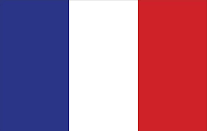
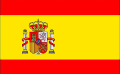
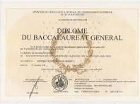
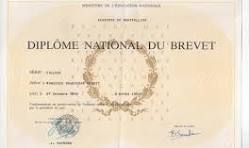

Présentation de la page
"La connaissance est le seul trésor qui s'accroît quand on le partage." - Socrate
comme vu dans la citation ci-dessus vous pourrait en apprendre un peu plus sur moi
-
Présentation
Je m'appelle Etienne Zorrilla
Je suis un étudiant en Bachelor Universitaire de Technologie à l'académie de Poitiers au département de Châtellerault (86) en réseau et télécommunication.
J'ai un BAC général avec les options SES, mathématique, physique-chimie et mathématique experte.
J'ai choisi cette formation car c'est un domaine qui m'intéresse particulièrement car je veux allier ma passion pour l'informatique tout en développant l'aspect réseau.
Langue
- Français 
- Anglais
- Espagnol 
-
Soft skills
- La curiosité est l'une des qualité qui me représente le plus. Je suis toujours à la recherche d'informations complémentaires afin de mieux
comprendre les sujets qui me pasionne
- la rigueur est également une force chez moi. J'aime être précis et je recherche a ce que mon travail soit toujours de bonne qualité
- la flexibilité et l'adaptibilitéUne est quelque chose que je trouve importante chez moi. J'essaye en écoutant les remarques d'adapter les situation au vue de mes collègues sur un point de vue emotionnel ou physique tout en gardant une efficacité constante dans le travail effectué
-
Passion
Je suis passioné par beaucoup de chose, dont l'informatique comme l'intitulé de la formation laisse penser et également les jeux vidéo, mais également de tout ce qui touche à la nourriture. Je suis également toujours interesser d'aprendre de nouvelle chose tous les jour et de passer du temps avec mes amis. J'aime également tout ce qui touche la culture japonnaise dont les manga et les art martiaux.
-
Diplome
Diplome scolaire
j'ai obtenu le BAC général lors de l'année scolaire 2021-2023
J'ai obtenu le brevet lors de l'année 2019-2020
Autres diplomes
Initiation aux Gestes de Premiers Secours
Langue maternelle
Niveau A2+
Niveau A2